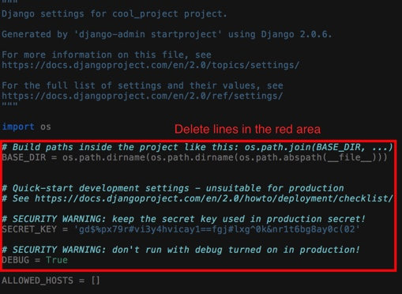
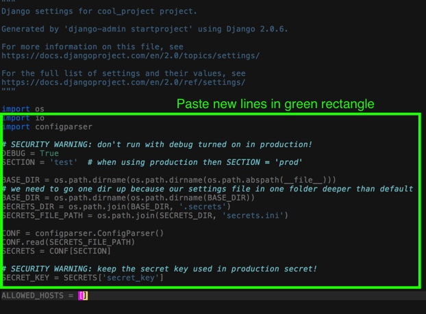
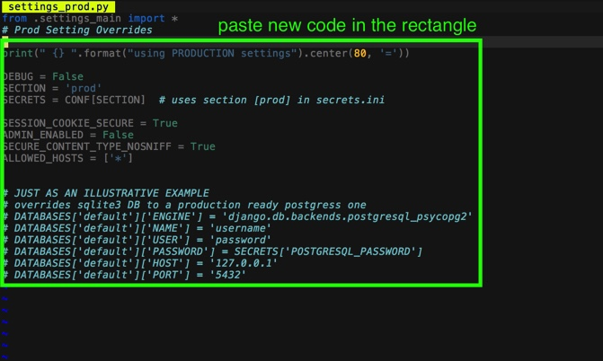
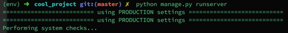

Creating A Production Ready Django App
Creating A Production Ready Django App
This post will demonstrate a production tested and simplified
configuration for Django framework. This is a two part blog post.
In the first part we will mainly focus how to structure settings.py
properly because with larger projects managing settings.py file
will usually result in an unpleasant experience somewhere around your anal area.
Furthermore this post will show you the best practices of keeping secrets such
as passwords hidden from your CVS.
This tutorial will use git and virtual environment so make sure you have these programs installed.
Disclaimer
Word test in this blog post is synonymous with word development.
this means that files such as settings_test.py could also be called
settings_dev.py keep that in mind!
Initialize New Django Project
go to dir you want your django project installed:
cd ~/<your-projects-dir>
create a folder for our django repository:
mkdir <my-django-repo>
cd <my-django-repo>
create documentation entries:
mkdir docs
touch readme.md
create and activate a virtual environment (with python3):
virtualenv --python="$(which python3)" env
source env/bin/activate
create a basic .gitignore file:
echo "*.pyc" >> .gitignore
echo "env/" >> .gitignore
install Django:
pip install django
pip install ConfigParser
pip install sphinx # (optional, used for documentation)
start a new project:
django-admin.py startproject <cool_project>
start a new app (optional):
cd <cool_project>
python manage.py startapp <sexy_app>
cd ../
create folders for further use:
mkdir .secrets
mkdir logs
mkdir static # optional but I recommend creating one
mkdir sandbox # optional for experiments and other stuff
add non-tracked directories to .gitignore:
echo ".secrets/" >> .gitignore
echo "logs/" >> .gitignore
echo "static/" >> .gitignore
echo "sandbox/" >> .gitignore
echo '*.sqlite3' >> .gitignore
Some of you may scream that creating logs or secrets dir in repo directory is madness. But bear with me, in production environment this will not be a directory but rather a symlink to e.g.:
./logs -> /var/log/django/logs
This symlink method will allow us to use less
configuration, because both dev and prod environments will write
logs to the same directory. Additionally we will decouple
our settings.py configuration from OS based paths such as:
/var/log/django/logs since any absolute path is not system agnostic.
your project structure should look like this (tree depth=2):
. ├── .gitignore ├── .secrets ├── cool_project │ ├── cool_project │ └── manage.py ├── docs ├── env # # this dir is irrelevant ├── logs ├── readme.md ├── sandbox └── static
Create Prod and Test Settings Files
cd <cool_project>
cd <cool_project>
mkdir conf
cd conf
touch __init__.py
printf "from .settings_main import *\n# Test Setting Overrides\n" > settings_test.py
printf "from .settings_main import *\n# Prod Setting Overrides\n" > settings_prod.py
we just created a new python package for our settings in the snippet above.
this package will contain two different config files. The reason why
we did this is because we want to have settings inheritance[^1]. This means
that we will define our core configuration in settings_main.py while
minor overrides based on the environment(test, prod) will be done in their
appropriate files settings_test.py and settings_prod.py. This makes
our configuration structure more similar to one you would find in Nginx.
Nginx like configuration structure forces your settings to be DRY.
enable test settings for our project:
ln -s settings_test.py settings.py
Symlinks again! This symlink is the magic symlink that will allow
us to quick swap our production and test settings even when developing.
This is very useful, because it is very likely that you will need to
run your Django project with production settings on your development machine.
So if you ever need to use settings_prod.py simply: ln -s ./settings_prod.py settings.py.
move settings file from its original position:
mv ../settings.py ./settings_main.py
what we did here is we said goodbye to original path of the
settings.py file this file was created when running django-admin.py startproject <cool-project>.
As I already mentioned we will use it for settings inheritance[^1]
edit wsgi.py file so that it will point to our new settings.py symlink:
vim ../wsgi.py
# change this line from:
os.environ.setdefault("DJANGO_SETTINGS_MODULE", "<cool_project>.settings")
# to:
os.environ.setdefault("DJANGO_SETTINGS_MODULE", "<cool_project>.conf.settings")
edit manage.py file so that it will point to settings.py symlink:
vim ../../manage.py
# change this line from:
os.environ.setdefault("DJANGO_SETTINGS_MODULE", "<cool_project>.settings")
# to:
os.environ.setdefault("DJANGO_SETTINGS_MODULE", "<cool_project>.conf.settings")
Last two snippets needed changing because if you recall we created
a new python module called conf this meant that module which holds Django project settings
has changed so we needed to tell manage.py and wsgi.py to take our project
settings from a new location
test your server:
cd ../..
source ../env/bin/activate && python manage.py runserver
If development server started without any issues GZ! You have a Django project skeleton. Follow chapters below as we add a special file used to keep our passwords away from CVS.
do your initial git commit:
cd ..
git init
git status
git add .gitignore
git add .
git commit -m "Initial Django Commit"
repository directory structure demo:
. ├── .git # this dir is irrelevant ├── .gitignore ├── .secrets ├── .swp ├── cool_project │ ├── cool_project │ │ ├── __init__.py │ │ ├── conf │ │ │ ├── __init__.py │ │ │ ├── settings.py -> settings_test.py │ │ │ ├── settings_main.py │ │ │ ├── settings_prod.py │ │ │ └── settings_test.py │ │ ├── db.sqlite3 │ │ ├── urls.py │ │ └── wsgi.py │ └── manage.py ├── docs ├── env # this dir is irrelevant ├── logs ├── readme.md ├── sandbox └── static
Append the settings file
In this chapter we will add extra few essentials such as log file configuration, passwords, secrets and more. I recommend you to copy code found below. Lines you copy and paste will include comments make sure you read them.
create a secrets.ini file:
touch .secrets/secrets.ini
paste this to .secrets/secrets.ini:
[prod]
secret_key = '<your_production_secret_key>'
[test]
secret_key = '<your_test_secret_key>'
secret_key = '...'
: This is your production server secret key. It must not match one under the [test]
section. Read more about it here
delete lines in settings_main.py:

paste new lines in the same area settings_main.py:

import io import configparser # SECURITY WARNING: don't run with debug turned on in production! DEBUG = True SECTION = 'test' # when using production then SECTION = 'prod' # we create a base directory 2 parent directories UP. BASE_DIR = os.path.dirname(os.path.dirname(os.path.abspath(__file__))) # we need to go one dir up because our settings file in one folder deeper than default BASE_DIR = os.path.dirname(os.path.dirname(BASE_DIR)) SECRETS_DIR = os.path.join(BASE_DIR, '.secrets') SECRETS_FILE_PATH = os.path.join(SECRETS_DIR, 'secrets.ini') LOGS_DIR = os.path.join(BASE_DIR, 'logs') LOG_MAIN = os.path.join(LOGS_DIR, 'django_main.log') CONF = configparser.ConfigParser() CONF.read(SECRETS_FILE_PATH) # this is a magic line, because based on what value SECTION= holds we will # able to choose our settings in this case test OR prod SECRETS = CONF[SECTION] # we grab our `secret_key` from our `secrets.ini` file SECRET_KEY = SECRETS['secret_key'] add basic logging to file: ```python LOGGING = { 'version': 1, 'disable_existing_loggers': False, # you can have as many formatter you want. assign different formatters to # different handlers 'formatters': { 'simple': { 'format': '%(asctime)s - %(levelname)s - %(message)s' }, 'multi': { 'format': '(%(threadName)-10s) %(asctime)s %(levelname)s: %(message)s' }, }, 'handlers': { 'applogfile': { 'level': 'DEBUG', 'class': 'logging.FileHandler', 'filename': LOG_MAIN, 'formatter': 'multi', }, 'console': { 'level': 'DEBUG', 'class': 'logging.StreamHandler', 'formatter': 'multi', }, }, # every django app you create will have to have their logger set. set them # here in the 'loggers' object. loggers['django'] is the name of our project # leave it as is. 'loggers': { 'django': { 'handlers': ['applogfile', 'console'], 'level': 'DEBUG', }, }, }
test run your project again:
cd <place where manage.py is found>
source ../env/bin/activate
python manage.py runserver
add lines to settings_prod.py:
This is where the override magic kicks in. Rather than writing our whole configuration from scratch we simply override values we want to change.

print(" {} ".format("using PRODUCTION settings").center(80, '=')) DEBUG = False SECTION = 'prod' SECRETS = CONF[SECTION] # uses section [prod] in secrets.ini SESSION_COOKIE_SECURE = True ADMIN_ENABLED = False SECURE_CONTENT_TYPE_NOSNIFF = True ALLOWED_HOSTS = ['*'] # JUST AS AN ILLUSTRATIVE EXAMPLE # overrides sqlite3 DB to a production ready postgress one # DATABASES['default']['ENGINE'] = 'django.db.backends.postgresql_psycopg2' # DATABASES['default']['NAME'] = 'username' # DATABASES['default']['USER'] = 'password' # DATABASES['default']['PASSWORD'] = SECRETS['POSTGRESQL_PASSWORD'] # DATABASES['default']['HOST'] = '127.0.0.1' # DATABASES['default']['PORT'] = '5432'
test run you project using prod settings
For this we will need to use the symlink trickery again. We are not changing
files or changing imported files we will only change where symlink
is pointing in this instance settings.py -> settings_prod.py
cd <place where manage.py is found>
cd <cool_project>
cd <cool_project>
cd conf
rm settings.py # let's delete old symlink
ln -s settings_prod.py ./settings.py
cd ../../
python manage.py runserver
if all went well you should see:

but since we do not care about our prod settings when developing
let us revert back to settings_test.py
cd <cool_project>
cd conf
rm settings.py # let us delete old symlink
ln -s settings_test.py ./settings.py
cd ../../
python manage.py runserver
Cleanup
When we ran python manage.py runserver for the first time a new db.sqlite3
file was created, this file was created prior to our configuration changes
and it will not be used anymore so let's remove it.
rm cool_project/db.sqlite3
Now we can make our second git commit
cd ..
git status
git add .
git commit -m "our second django project commit"
Now you have a better base for your future Django Projects.
What Do I Now?
- Create a new Django app in your project:
python manage.py <my-super-app> - Write awesome code
- If something did not work or you are lazy just copy skeleton we did:
git@github.com:dovydasgulbinas/blog-django-skeleton.git - Tune for a second part, next week, where I will be showing you how to deploy your project using fabric2 and invoke to a production environment.